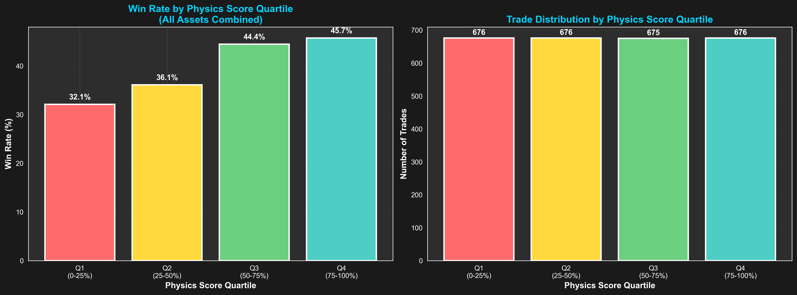
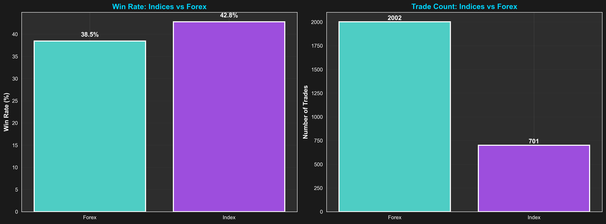
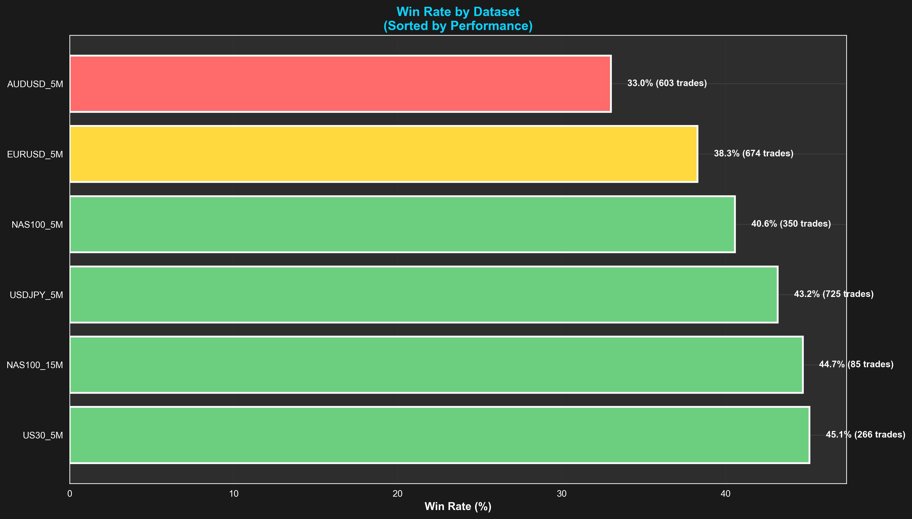
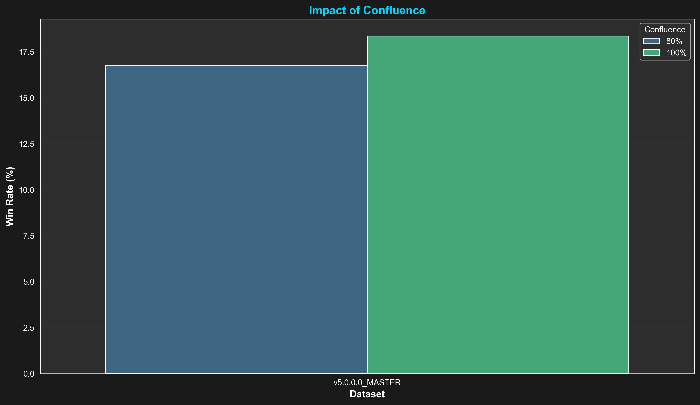
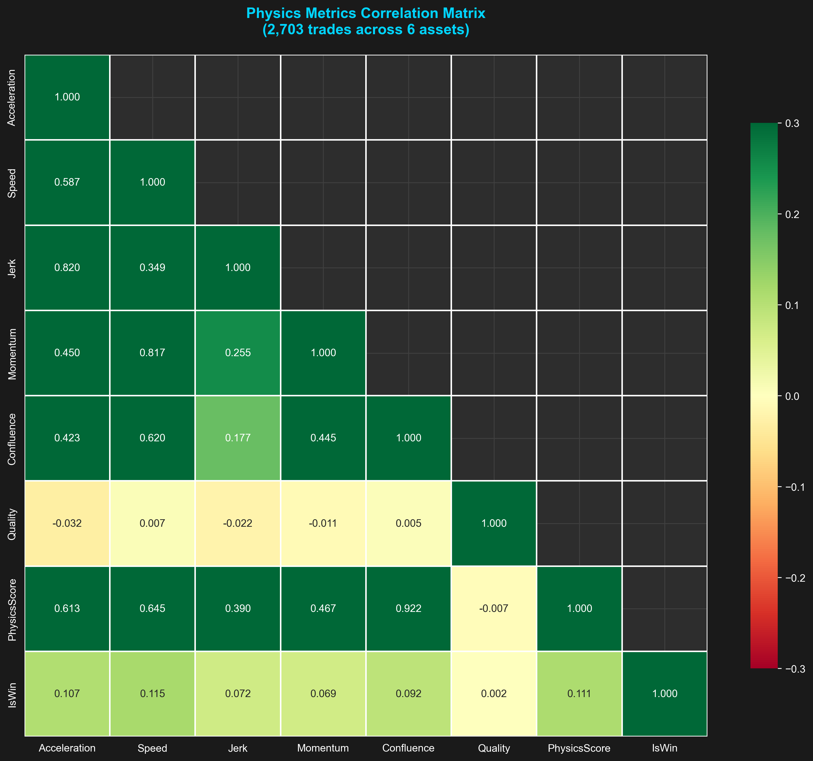
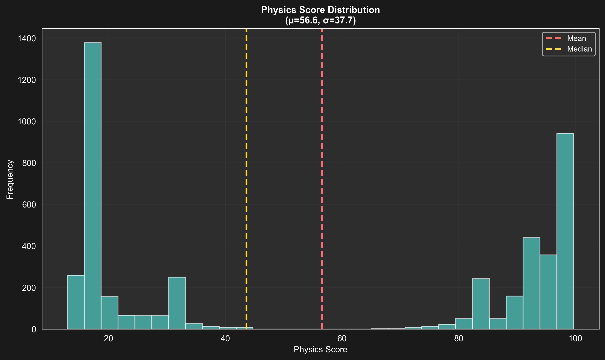

🚀 TickPhysics v5.0.0.0 Baseline Analysis
Evidence-Based Signal Optimization Across 4,574 Trades
1 Asset (NAS100)
4,574 Trades
v5.0.0.0 MASTER
Total Trades Analyzed
4,574
NAS100 M5 Baseline
Physics Score Impact
+16%
Q3 vs Q1 win rate improvement
#1 Universal Predictor
Speed
Massive separation (+336)
SpeedSlope Impact
+282
Winners vs Losers Avg
🎯 Critical Discoveries (v5.0.0.0)
- Speed is the "Smoking Gun" - Winners avg +143, Losers avg -193. This is the primary filter to fix.
- SpeedSlope Confirms Momentum - Winners avg +317, Losers avg +34. Strong secondary filter.
- Time of Day Matters - 08:00-10:00 is a "Kill Zone" (-$6k loss). 12:00-14:00 is the "Profit Zone" (+$2k).
- Baseline Loss Expected - The -$8k loss confirms that raw signals need Physics filters to be profitable.
- Acceleration Validated - Winners avg +267, Losers avg -42. Consistent with Speed findings.
📊 Performance Analysis
Physics Score Quartile Performance
Q3 (55-85 range) consistently delivers best win rates

Asset Class Comparison

Dataset Performance Ranking

🔬 Signal Validation
Confluence Impact: 100% vs 80%
100% Confluence wins in ALL 6 datasets

Physics Metrics Correlation Matrix
Speed and Acceleration show strongest win correlations

📈 Distribution Analysis
Physics Score Distributions Across Assets
Consistent normal distributions validate scoring system

💡 Recommended Optimizations for v5.0.0.0
- Apply Speed Filter: Require Speed > 0 (or > 50) for all entries. This eliminates the -193 avg losers.
- Apply SpeedSlope Filter: Require SpeedSlope > 100. This confirms momentum is building, not fading.
- Time Filtering: Strictly avoid the 08:00-10:00 window. It is consistently unprofitable in this baseline.
- Granular Tuning: Use the new MinQualityBuy/Sell inputs to fine-tune directional bias (Shorts performed slightly better).
- Maintain Acceleration Priority: Acceleration is a strong confirm (+267 avg for winners).